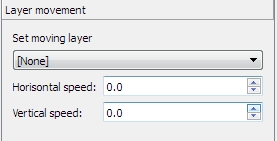

Here you can set movement for solid and statical items, what is a member of target layer.
Layer what selected in list will be moved with defined speed:
Horizontal speed:
If <0 - move to left.
If >0 - move to right
If =0 - stop
Vertical speed:
If <0 - move to up
If >0 - move to down
If =0 - stop
Layer move list

See also:
Copyright © 2014-2015 Platformer Game Engine by Wohlstand project. All rights reserved.